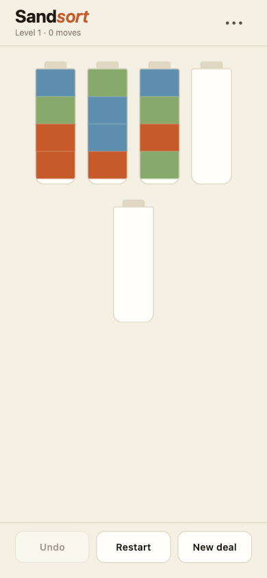
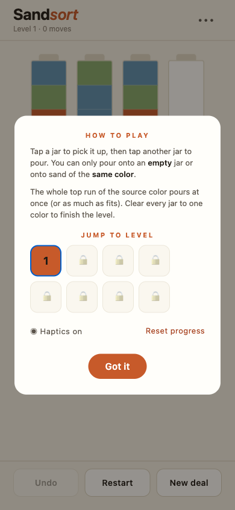

Pour mechanic
Tap a jar to lift it, tap another to pour. The whole top run of the source color pours at once — or as much as fits.
Now in beta · iOS via Expo Go
A small pour-and-sort puzzle for iPhone. Tip jars of colored sand into each other until every jar is one color. No ads, no IAP, no clock.
Offline-firstNo adsNo IAPOpen source
Features
The whole feature set, plainly listed — no upsells gating the basics.
Tap a jar to lift it, tap another to pour. The whole top run of the source color pours at once — or as much as fits.
Move history is walked back one step at a time. No move count guilt; experiment freely.
5×5 → 8×8 boards, three to eight colors. Each level unlocks the next; jump back from the menu any time.
Mulberry32 PRNG generates per-seed deals. New layout reshuffles within the level; same seed always reproduces the same board.
Each level records your fewest-moves clear. Beat your own record.
When no pour is possible, the board surfaces a banner with guidance — Undo, Restart, or New layout.
How to play
A few short steps. The app gets out of your way after that.
The selected jar lifts. Tap it again to put it down without pouring.
Valid pours: empty target, or target's top color matches source's top color. The whole top run transfers, or as much as fits.
Level completes when every jar is one solid color (or empty). The win modal shows your move count and best-yet for that level.
Undo walks back one move at a time. Restart resets the same deal. New layout reshuffles the current level with a fresh seed.
Clearing a level unlocks the next. From the menu, jump back to any unlocked level and see your best move count for each.
Screenshots
Captured from the running app at iPhone 14 viewport.

